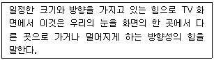
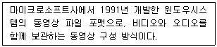
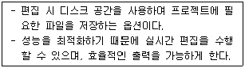

디지털영상편집-1급 (2017-05-13 기출문제)
1. PAL, NTSC, SECAM 등 컬러 텔레비전에서 사용하는 기본적인 색 형식은?
- RGB 색 공간
- YUV 색 공간
- HSL 색 공간
- CMYK 색 공간
(정답률: 60%)

2. 1에서 30프레임까지 연속적으로 재생되지 않고 5프레임, 10프레임, 15프레임 등 임의의 프레임 단위로 정지됐다가 재생되는 효과는?
- 스트로브(Strobe)
- 패스트(Fast)
- 슬로(Slow)
- 프리즈(Freeze)
(정답률: 64%)
3. MOV 파일에 대한 설명으로 옳지 않은 것은?
- 애플사가 개발한 매킨토시용 표준 시스템 확장 파일이다.
- 디지털 비디오 및 오디오 데이터 유형만을 제공한다.
- 다양한 환경에서 표준 인터페이스, 재생, 압축 및 압축 해제 기능을 제공한다.
- 멀티미디어 제작 도구에서 지원되는 표준 멀티미디어 파일포맷에 가장 근접한 기술로 평가된다.
(정답률: 53%)
4. NTSC 방식의 필드 주파수는?
- 50Hz
- 60Hz
- 70Hz
- 80Hz
(정답률: 72%)
5. SECAM 방식에 대한 설명으로 옳지 않은 것은?
- 필드 주파수가 50Hz이다.
- 텔레비전의 한 프레임은 635개의 주사선으로 되어 있다.
- 1초에 25프레임으로 되어 있다.
- 프랑스에서 개발되었다.
(정답률: 66%)
6. 다음 중 연결 단자와 그에 대한 설명으로 옳지 않은 것은?
- RCA : VCR, 튜너, CD 플레이어 같은 일반 소비자용의 오디오나 비디오 연결을 위해 사용한다.
- XLR : 마이크 혹은 다른 밸런스 오디오 장치를 연결하거나 AES/EBU 디지털 오디오 연결을 위해 사용한다.
- IEEE1394 : DV 캠코더나 VCR, 1394 포트를 장착한 컴퓨터 등의 연결에 사용하는 단자로 단방향 전송이 가능하다.
- BNC : 아날로그 컴포넌트, SDI, SDTI 등 다양한 비디오 소스를 연결하는데 사용한다.
(정답률: 52%)
7. 다음 중 마이크로소프트용 코덱으로 옳지 않은 것은?
- ASF
- WMA
- WMV
- MPEG
(정답률: 72%)
8. 다음 중 오디오와 관계된 용어로 옳은 것은?
- 스닉 아웃
- 콘트라스트
- 리드룸
- 달리
(정답률: 64%)
9. 다음 중 카메라 문법의 명칭과 그에 대한 설명으로 옳은 것은?(오류 신고가 접수된 문제입니다. 반드시 정답과 해설을 확인하시기 바랍니다.)
- 틸트 : 카메라가 피사체로 다가가고 후퇴하며 촬영하는 것
- 크레인 : 피사체를 중심으로 일정한 거리를 유지하며 둥글게 움직이는 것
- 엘리베이터 : 카메라 위치는 고정한 상태에서 카메라 헤드를 위와 아래로 움직이는 것
- 팬 : 카메라가 피사체인 인물의 움직임을 따라 가며 찍는 것
(정답률: 40%)
10. 다음 중 코덱에 대한 설명으로 옳지 않은 것은?
- 영상이나 음성 등의 아날로그 신호를 펄스 부호 변조(PCM)를 사용하여 전송에 적합한 디지털 비트 스트림으로 변환한다.
- 영상 또는 음성 등의 디지털 신호를 아날로그 신호로 변환하는 것을 디코더(Decoder)라고 한다.
- 아날로그 신호를 디지털 신호로 압축한 영상이나 음성을 컴퓨터에서 보기 위해 코덱 파일을 설치해야 한다.
- 'Divx'는 비교적 뛰어난 화질을 보여주는 영상 코덱으로 많이 사용되고 있다.
(정답률: 45%)
11. 아래 내용은 무엇에 대한 설명인가?

- 게인
- 믹싱
- 벡터
- 아크
(정답률: 80%)
12. 다음 중 영상의 의미성을 발생시키는 영상 다이나미즘의 구성요소로 옳지 않은 것은?
- 스피드감
- 화상의 크기
- 화상의 질감
- 길이(시간의 길이)
(정답률: 49%)
13. 다음 중 영상의 특징으로 옳지 않은 것은?
- 영상은 연결성을 발생시킨다.
- 컷이 쌓여가면서 작품이 된다.
- 상하의 감각으로 위에 보이는 것은 크고 상위의 것이다.
- 움직이지 않는 컷은 길이가 없다.
(정답률: 75%)
14. 다음에서 설명하는 디지털 파일의 종류는?

- MOV
- AVI
- MPEG
- MP4
(정답률: 69%)
15. 다음 중 타임코드에 대한 설명으로 옳지 않은 것은?
- 타임코드는 영상을 재생하거나 편집을 할 때 프레임들이 어떻게 계산되는가를 지정하는 것을 말한다.
- 드롭 프레임 타임코드는 10의 배수가 되는 분을 매분마다 1프레임씩 누락시킨다.
- 거의 모든 방송용과 가정용 비디오 장비들은 SMPTE 비디오 타임코드를 이용하여 시간을 나타낸다.
- 드롭 프레임을 사용하지 않는 타임코드는 1초가 언제나 30프레임이다.
(정답률: 49%)
16. 다음 중 특수 영상 효과 중 메커니컬 효과(Mechanical Effect)에 해당하지 않는 것은?
- 특수분장
- 애니매트로닉스
- 합성효과
- 화공효과
(정답률: 51%)
17. 편집 기법 중 영상의 극적 리듬과 템포를 조절하는 가장 기본적인 방법은?
- 포커스 인/아웃
- 화면전환
- 샷의 크기와 길이
- 재설정 샷의 이용
(정답률: 77%)
18. 다음 중 편집의 기능과 그에 대한 설명으로 옳지 않은 것은?
- 결합(combine) : 적절한 순서에 따라 여러 개의 촬영 데이터를 장면별로 연결
- 손질(trim) : 불필요한 부분을 잘라내고 말끔히 정리
- 수정(correct) : 잘못 촬영한 것이나 별로 마음에 들지 않는 장면을 삭제
- 구성(build) : 이미 촬영 완료된 수많은 화면들을 이용해 새로운 프로그램 제작
(정답률: 63%)
19. 검은 화면에서 점점 밝아지거나, 화면이 점점 어두워지는 화면 전환 기법으로 옳은 것은?
- 디졸브
- 페이드 인/페이드 아웃
- 컷
- 포커스 인/아웃
(정답률: 77%)
20. 다음 중 코덱에 대한 설명으로 옳지 않은 것은?
- 모션제이펙(M-Jpeg) 코덱은 사진이미지 포맷에서 가장 높은 압축률을 자랑한다.
- Xvid 코덱은 DivX 코덱의 경쟁 코덱으로써 마이크로소프트에서 판매한다.
- MOV는 애플사에서 만든 동영상 코덱이다.
- RLE(Run Length Encoded)코덱은 2차원 애니메이션 제작에 효과적이다.
(정답률: 60%)
21. 다음 중 Adobe Dynamic Link에 대한 설명으로 옳은 것은?
- 프리미어 내에서 어도비 프로덕션 관련 어플리케이션과 연계한다.
- 영상 재생 중 클릭을 통해 웹사이트로 연결 시켜준다.
- 편집 중 화면이 끊김없이 재생되도록 도와 준다.
- 최종 완성된 영상 파일의 용량을 줄일 수 있도록 한다.
(정답률: 63%)
22. 다음 중 시퀀스 메뉴의 Lift의 대한 설명으로 옳은 것은?
- 클립의 불필요한 부분의 시작/종료지점을 지정한 후 제거하고 공백은 남겨둔다.
- 클립의 불필요한 부분의 끝지점을 지정한 후 앞부분을 모두 제거한다.
- 클립의 불필요한 부분의 시작/종료지점을 지정한 후 제거하고 공백을 자동으로 당겨 채운다.
- 클립의 불필요한 부분의 시작지점을 지정한 후 뒷부분을 모두 제거한다.
(정답률: 49%)
23. 다음 중 프로젝트창에 대한 설명으로 옳은 것은?
- 간단한 편집도 가능하다.
- 파일 이름만 볼 수 있다.
- 사운드 클립만 불러와 정렬하는 것도 가능하다.
- 클립의 투명도를 조절할 수 있다.
(정답률: 63%)
24. 클립을 한 번 이상 자를 때 사용하는 도구는?
- Rate Stretch Tool
- Rolling Edit Tool
- Razor Tool
- Ripple Edit Tool
(정답률: 68%)
25. 아래 내용은 어떠한 기능에 대한 설명인가?

- Media
- Scratch Disks
- Device Control
- Auto Save
(정답률: 70%)
26. 다음 중 시퀀스 메뉴로 옳지 않은 것은?
- Render Work Area
- Razor At Current Time Indicator
- Apply Video Transition
- Synchronize
(정답률: 58%)
27. 다음 중 프로젝트 패널에 대한 설명으로 옳지 않은 것은?
- 선택한 소스의 미리 보기나 미리 듣기 기능을 지원한다.
- 해당 소스의 해상도, 지속시간 등 간략한 정보를 제공한다.
- 저장소 폴더를 이용하여 소스를 종류나 목적에 따라 분류해 작업 효율성을 높여준다.
- 영상이나 사운드 등의 자르기, 붙이기, 효과 주기, 화면 전환하기 등의 작업을 할 수 있다.
(정답률: 72%)
28. 다음 중 타임라인 패널에서 시퀀스를 편집하는데 사용할 수 있는 도구로 옳지 않은 것은?
- Select Tool
- Razor Tool
- Insert Tool
- Pen Tool
(정답률: 56%)
29. 다음 중 편집 작업의 순서로 옳은 것은?
- 컴퓨터 환경 설정 ⇨ 동영상 캡쳐 ⇨ 임포트 ⇨ 편집 ⇨ 자막 넣기 ⇨ 각종 효과 적용 ⇨ 오디오 작업 ⇨ 렌더링 및 익스포트
- 컴퓨터 환경 설정 ⇨ 동영상 캡쳐 ⇨ 편집 ⇨ 자막 넣기 ⇨ 임포트 ⇨ 각종 효과 적용 ⇨ 오디오 작업 ⇨ 렌더링 및 익스포트
- 컴퓨터 환경 설정 ⇨ 동영상 캡쳐 ⇨ 임포트 ⇨ 오디오 작업 ⇨ 편집 ⇨ 자막 넣기 ⇨ 각종 효과 적용 ⇨ 렌더링 및 익스포트
- 컴퓨터 환경 설정 ⇨ 임포트 ⇨ 편집 ⇨ 자막 넣기 ⇨ 동영상 캡쳐 ⇨ 각종 효과 적용 ⇨ 오디오 작업 ⇨ 렌더링 및 익스포트
(정답률: 67%)
30. 다음 중 프로젝트 메뉴의 항목과 그에 대한 설명으로 옳은 것은?
- Automate to Sequence : 클립 묶음을 전체 또는 선별적인 방식으로 순차적으로 타임라인 윈도우에 배치한다.
- Frame : 각 클립을 대표하는 화면을 리스트 보기에 출력하도록 설정한다.
- Play-Stop On/Off : 영상만 플레이하는 버튼이다.
- Thumbnails : 프로젝트 패널에서 클립의 아이콘의 형태를 설정한다.
(정답률: 40%)